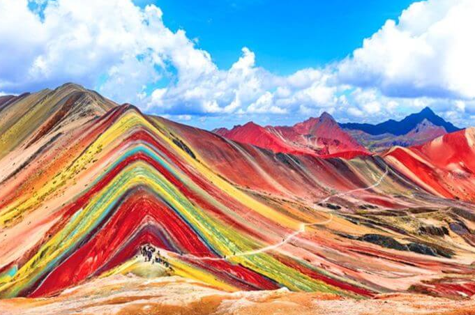
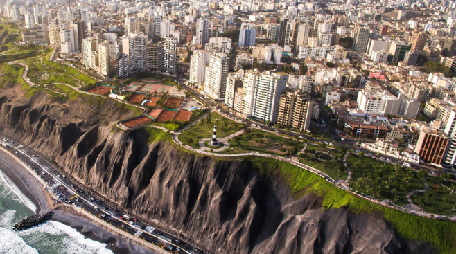

Peru: O Coração do Império Inca
O Peru é um país localizado na América do Sul, conhecido por sua rica herança histórica, diversidade cultural e belas paisagens naturais. Faz fronteira com o Brasil, Bolívia, Chile, Equador e Colômbia. Sua capital é Lima, considerada o principal centro político, econômico e cultural do país.
O Peru possui uma das histórias mais fascinantes do continente americano. Antes da chegada dos europeus, o território era dominado pelo poderoso Império Inca, uma das maiores civilizações da América. Os incas construíram cidades avançadas e desenvolveram sistemas agrícolas sofisticados.

Um dos símbolos mais importantes dessa civilização é Machu Picchu, antiga cidade inca localizada no alto das montanhas, considerada uma das Sete Maravilhas do Mundo Moderno. A cultura peruana é resultado da mistura entre tradições indígenas, influências espanholas, africanas e asiáticas.
A gastronomia peruana é reconhecida mundialmente e possui pratos famosos como ceviche, lomo saltado e causa peruana. O ceviche, preparado com peixe cru marinado no limão, é considerado um dos pratos mais tradicionais do país.

O território peruano apresenta grande variedade geográfica: costa, serra e floresta amazônica. Entre os principais pontos turísticos, destaca-se a cidade de Cusco, o Lago Titicaca (o lago navegável mais alto do mundo) e as misteriosas Linhas de Nazca.
Uma curiosidade é que o Peru é um dos maiores produtores mundiais de batata, alimento originado na região andina. A economia peruana é baseada principalmente na mineração, agricultura, pesca e turismo.
Referências
- Site oficial de turismo do Peru
- Britannica – Peru
- UNESCO – Machu Picchu